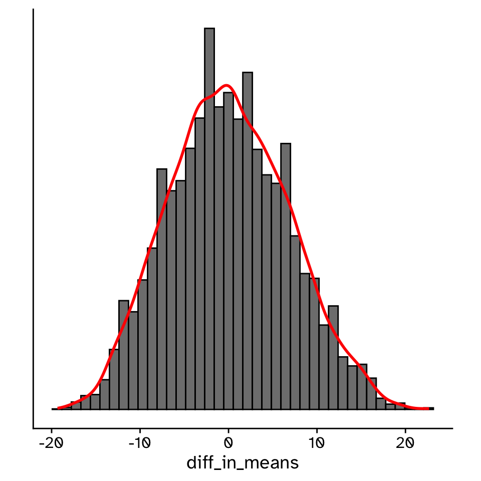
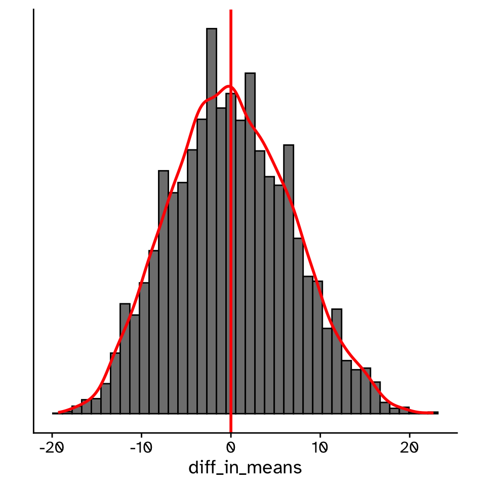
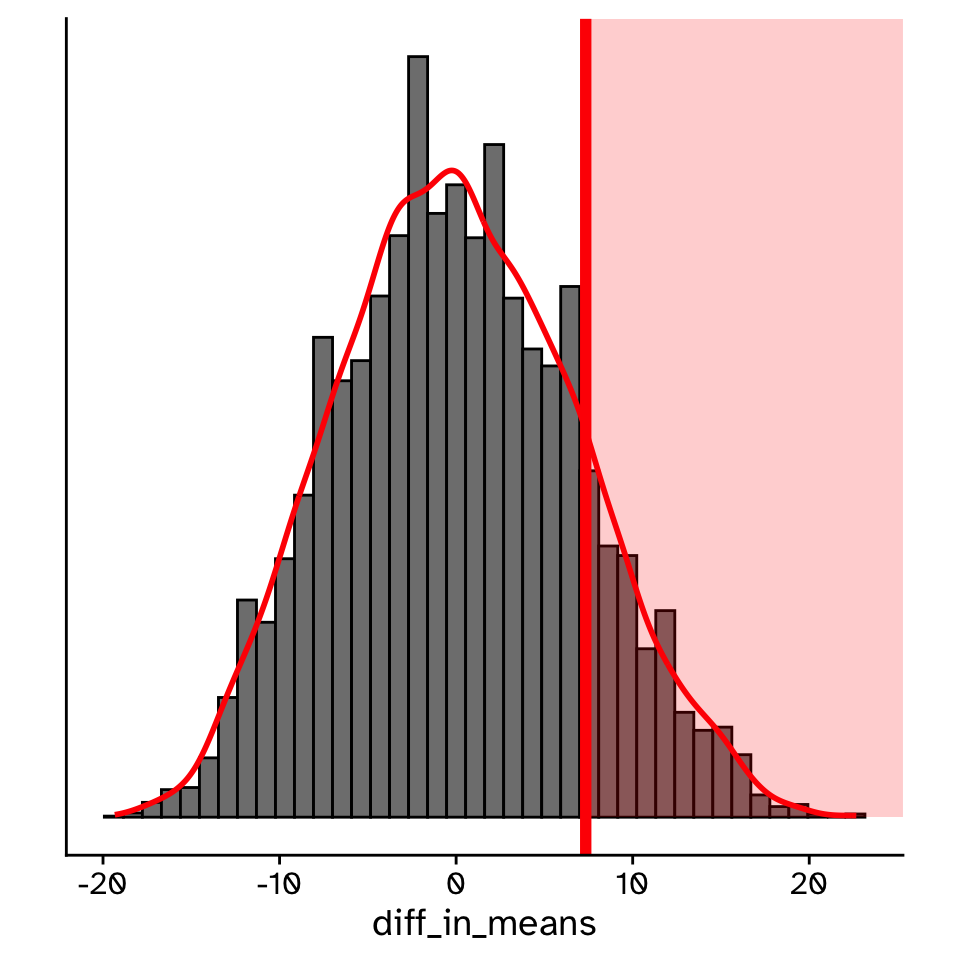
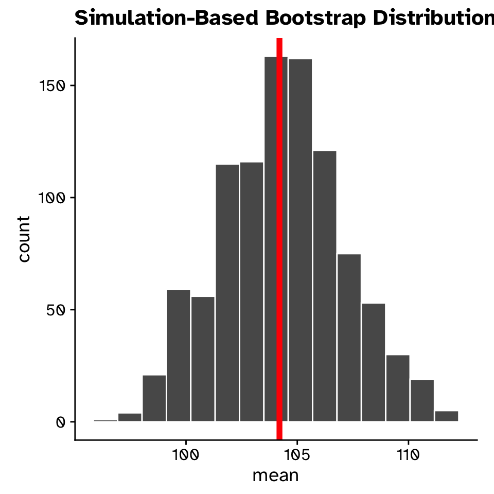
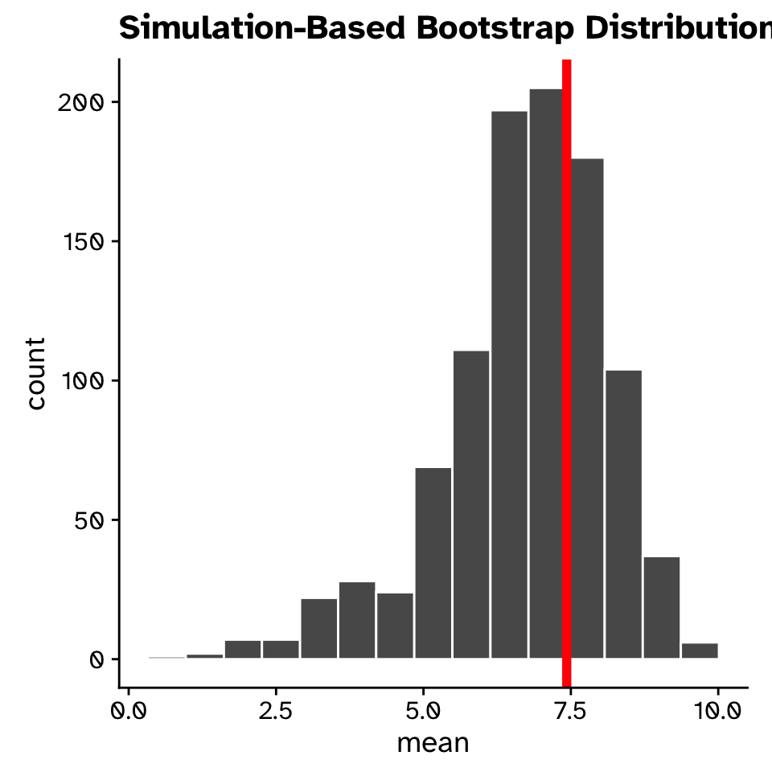
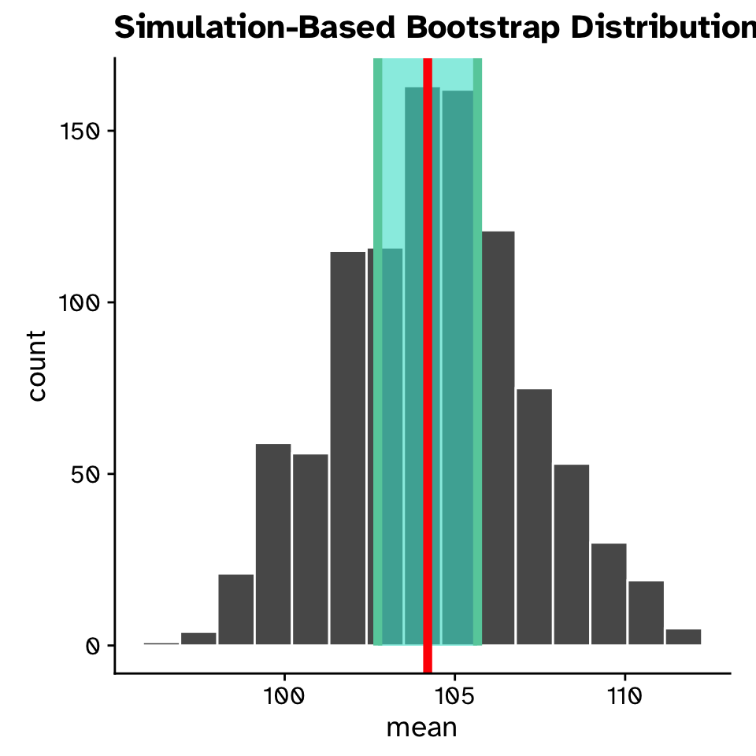

Introduction to statistical inference
Lecture 1
Iain R. Moodie
BIOC13 - Ekologi
Department of Biology, Lund University
2025-09-30
Introduction
Introduction
Aim of this lecture
- To explain the foundational ideas of statistical inference
- Focus on computational (instead of mathematical) statistical techniques
- Focus on applying these ideas to answer ecological questions
Introduction
Your focus should be on
- The broad ideas
specific formulae - Statistics as a tool to answer interesting ecological questions
Populations and Samples
Populations and Samples
The how and the why of statistics
- We are often limited by how much data we can collect
- We want to say something more general than the data we collect
- Example:
- Measured the species diversity in 20 spruce plantations across Sweden
- Want to say something about species diversity in all spruce plantations (in Sweden)
Populations and Samples
The how and the why of statistics
- Cannot measure species diversity in every forest in Sweden
- Instead, we collect a representative sample of data
- Use the sample to draw conclusions about the population
- Statistics allows us to approximate properties (e.g. mean species diversity) of entire populations from (usually) a single sample
Populations and Samples
The how and the why of statistics
Population
The totality of individual observations about which inferences are to be made, existing anywhere in the world or at least within a definitely specified sampling area limited in space and time (Sokal and Rohlf 1995).
Sample
A collection of individual observations selected by a specified procedure (Sokal and Rohlf 1995).
Populations and Samples
The how and the why of statistics
Populations
- All the spruce (gran) trees in Skåne
- All the blue tits (blåmes) in Sweden
- All the genes in the common fruit fly (Drosophila melanogaster)
- All the herring (sill) in the Baltic sea
Samples
- 50 spruce trees in a forest in Skåne
- 100 caught blue tits from nest boxes in Sweden
- 20 genes from the Drosophila melanogaster genome
- 1000 herring caught by a fishing boat off the coast of Karlskrona
Populations and Samples
The how and the why of statistics

Inference
Inference
Using the sample to infer population parameters
03:00
For this example, our population will be all the fish in a small pond. The body length (mm) and sex of the fish are shown below:
- Males:
- 96, 98, 112, 101, 101, 114, 104, 93, 95, 106
- Females:
- 115, 104, 105, 101, 93, 121, 106, 77, 104, 94
Task
In pairs, take a random sample (n=3) of males and females and calculate a mean for each. Subtract the means from each other (\(\bar{x}_{male}-\bar{x}_{female}\)).
Inference
Example
I rolled a 10 sided dice 6 times:
- select the 2nd, 1st and 6th male:
- 98, 96, 114 (\(\bar{x}_{male} = \frac{98+96+114}{3} = 102.67\))
- select the 3rd, 9th and 8th female:
- 105, 104, 77 (\(\bar{x}_{female} = \frac{105+104+77}{3} = 95.33\))
- \(\bar{x}_{male}-\bar{x}_{female}=102.67-95.33=7.34\)
Inference
Building a sampling distribution
Inference
The sampling distribution
Inference
The sampling distribution
- The distribution of observed statistics (e.g. difference in means) obtained through repeatedly sampling the population
- Shows the range of statistics we can observe through sampling
- Its central tendency gives us an idea about where the true population parameter value is
- The sampling distribution is at the foundation of all of statistics!
Inference
The sampling distribution
Inference
The sampling distribution

Inference
The utility of the sampling distribution

Confidence intervals
- If we collect another sample of the same size, how much would the observed statistic vary?
Inference
The utility of the sampling distribution

Hypothesis testing
- Is our result compatible with a specific hypothesis?
Inference
The sampling distribution
- But we only (usually) collect a single sample!
- A sampling distribution by definition requires many samples!
- How can we get a sampling distribution?
- Great question!
Bootstrap resampling
Bootstrap resampling
How to construct a sampling distribution from a single sample
Sample of 6 males from the fish in the pond
- Sample:
- 96, 98, 112, 101, 114, 106
- Observed mean:
- \(\bar{x} = \frac{96 + 98 + 112 + 101 + 114}{5} = 104.2\)
- I want to show the range of observed means would also be plausible if I collected another sample
- But I can’t / don’t want to collect another sample!
Bootstrap resampling
How to construct a sampling distribution from a single sample
- If we assume that my sample is representative of the populations
- collected randomly and without bias
- We can resample the sample with replacement to create more “samples”
- Process known as “Bootstrapping”
- From English phrase: “To pull one’s self up by their own bootstraps”
- Seems impossible?
Bootstrap resampling
Generating a bootstrap sample
03:00
- Original sample:
- 96, 98, 112, 101, 114, 106
Task
In pairs, resample with replacement (n=6) values from my sample to get a new “bootstrap sample”, then calculate the mean.
- Example:
- Roll a dice 6 times: 4 2 1 4 2 3
- Bootstrap sample: 101, 98, 96, 101, 98, 112
- Bootstrap sample mean: 101
Bootstrap resampling
Generating a bootstrap sampling distibution
Bootstrap resampling
Generating a bootstrap sampling distibution

- Means from 1000 bootstrap samples
- Observed mean (mean of original sample) in red
- The observed mean is still our best guess at the true mean
- Bootstrap sampling distribution allows us to quantify our uncertainty in the mean
Bootstrap resampling
The bootstrap sampling distibution
- If we use the bootstrap sampling distibution in place of the real sampling distribution, we can can use it to infer things about the original population.
- The bootstrap method can be applied to any statistic you can calculate from a sample!
Bootstrap resampling
The bootstrap sampling distibution

Bootstrap resampling
Works for any statistic!
- Original sample:
- 96, 98, 112, 101, 114, 106
- Standard deviation is a measure of spread:
\[ s = \sqrt{\frac{\sum_{i}^n (x_i - \bar{x})^2}{n-1}} \]
Bootstrap resampling
Works for any statistic!
- Original sample:
- 96, 98, 112, 101, 114, 106
- Standard deviation is a measure of spread:
\[ s = \sqrt{\frac{ (96 - 104.2)^2 + (98 - 104.2)^2 + (112 - 104.2)^2 + \newline (101 - 104.2)^2 + (114 - 104.2)^2 + (106 - 104.2)^2 }{6-1}} \]
Bootstrap resampling
Works for any statistic!
- Original sample:
- 96, 98, 112, 101, 114, 106
- Standard deviation is a measure of spread:
\[ s = \sqrt{\frac{(-8.2)^2 + (-6.2)^2 + (7.8)^2 + (-3.2)^2 + (9.8)^2 + (1.8)^2}{5}} \]
Bootstrap resampling
Works for any statistic!
- Original sample:
- 96, 98, 112, 101, 114, 106
- Standard deviation is a measure of spread:
\[ s = \sqrt{\frac{67.24 + 38.44 + 60.84 + 10.24 + 96.04 + 3.24}{5}} \]
Bootstrap resampling
Works for any statistic!
- Original sample:
- 96, 98, 112, 101, 114, 106
- Standard deviation is a measure of spread:
\[ s = \sqrt{\frac{276.04}{5}} \]
Bootstrap resampling
Works for any statistic!
- Original sample:
- 96, 98, 112, 101, 114, 106
- Standard deviation is a measure of spread:
\[ s = \sqrt{55.208} \]
Bootstrap resampling
Works for any statistic!
- Original sample:
- 96, 98, 112, 101, 114, 106
- Standard deviation is a measure of spread:
\[ s = 7.43 \text{mm} \]
Bootstrap resampling
Works for any statistic!

- Standard deviations from 1000 bootstrap samples
- Observed SD (SD of original sample) in red
- The observed SD is still our best guess at the true SD
- Bootstrap sampling distribution allows us to quantify our uncertainty in the SD
Bootstrap resampling
Works for any statistic!
Quantifying sampling error
If we collected another sample of the same size, how much would our test statistic be likely to vary?
Quantifying sampling error
What range of observed statistics is plausible?
- If we took another sample, it is unlikely that we would get exactly the same observed statistics
- We want to quantify this (sampling error)
- Problem: we (usually) only ever collect one sample
- Solution: generate more samples using bootstrap resampling!
Quantifying sampling error
The standard error (SE)

- The standard error is the standard deviation of the sampling distribution
- Use the bootstrap generated sampling distribution as our sampling distribution
- Assumptions: your sampling distribution is approximately normally distributed (bell-curve)
- If calculated with a bootstrap sampling distribution often written as \(SE_{boot}=2.7\)
Quantifying sampling error
The 95% confidence interval
- If we repeated our experiment many times and calculated a 95% CI each time, the 95% CI’s would include the “true” population value 95% of the time
- Many methods to calculate:
- Percentile method: Middle 95% of the sampling distribution
- No assumptions, but requires a large (>30 >>14) sample size to be accurate
Quantifying sampling error
The 95% confidence interval

- Often reported after the observed statistic:
- Mean = 104 mm (95%CI: 99 - 110 mm)
- Less strict definition: where we expect the true population parameter to be
Confidence intervals
Using a bootstrap sampling distribution

Confidence intervals
An example
02:00
“Breakthrough Drug Reduces COVID-19 Hospitalizations by 12%!”
- A new antiviral drug reduced COVID-19 hospitalizations by 12% in a clinical trial involving 1,000 patients.
- A new antiviral drug reduced COVID-19 hospitalizations by 12% (95% CI: -11 to 32%) in a clinical trial involving 1,000 patients.
Task
Think for 30 seconds, then discuss in pairs or small groups for 1.5 minutes about the effect of including the confidence interval in the statement.
Hypothesis testing
- Is our sample compatible with a certain hypothesis?
- If we collected another sample, could the conclusion have been different?
Hypothesis testing
Is our sample compatible with a certain hypothesis?
- More stricly: a method of statistical inference used to decide whether our sample provides sufficient evidence to reject a particular hypothesis
- Used to answer the questions:
- Could our results be just due to chance?
- If we collected another sample, could the conclusion have been different?
Hypothesis testing
One part of one way of conducting science
- Make observations
- Formulate a hypothesis
- Design experiment (discuss)
- Conduct the experiment (obtain data)
- Analyze the data (is your data compatible with your hypothesis?)
- Formulate conclusion
- Synthesize results with other studies, and determine next steps
Hypothesis testing
Back to the fish
- While watching a nature documentary, I hear that in many fish species, females are often larger than males.
- I wonder if this is true of the fish in my pond (from the previous example)?
- I hypothesise that females will be bigger than males
Hypothesis testing
Back to the fish
- Sample of males:
- 96, 112, 101, 101, 114, 104
- Mean = 104.67 mm
- Sample of females:
- 115, 104, 105, 101, 93, 121
- Mean = 106.5 mm
- Observed difference in means = 104.67 - 106.5 = -1.83 mm
- In my sample, I observe that female fish are on average larger
- Hypothesis confirmed?
Hypothesis testing
Back to the fish
- Not so fast!
- Only sampled 12 fish in total
- How probable would it be to collect a sample with such a difference in mean sizes if there was actually no difference in the population?
- Do I have sufficient evidence against my null hypothesis
- There is no difference in mean size between males and females
- Solution: need to compare my observed value against a sampling distribution of data collected assuming the null hypothesis is true
- Null distribution
Hypothesis testing
Back to the fish
- If null hypothesis is true:
- Sex column should have no predictive value for the Body Length column
- Randomly shuffling (permuting) Sex column should produce samples similar to observed sample
| Sex | Body Length (mm) |
|---|---|
| Male | 96 |
| Male | 112 |
| Male | 101 |
| Male | 101 |
| Male | 114 |
| Male | 104 |
| Female | 115 |
| Female | 104 |
| Female | 105 |
| Female | 101 |
| Female | 93 |
| Female | 121 |
Hypothesis testing
Back to the fish
- If null hypothesis is false:
- Sex column has predictive value on Body Length column
- Permuting breaks the special arrangement that has predictive value
- Observed should be very different to values from permuting
| Sex | Body Length (mm) |
|---|---|
| Male | 96 |
| Male | 112 |
| Male | 101 |
| Male | 101 |
| Male | 114 |
| Male | 104 |
| Female | 115 |
| Female | 104 |
| Female | 105 |
| Female | 101 |
| Female | 93 |
| Female | 121 |
Hypothesis testing
Back to the fish
- Null hypothesis:
- There is no difference in body lengths between males and females
- Observed difference in means = -1.83
| Sex | Body Length (mm) |
|---|---|
| Male | 96 |
| Male | 112 |
| Male | 101 |
| Male | 101 |
| Male | 114 |
| Male | 104 |
| Female | 115 |
| Female | 104 |
| Female | 105 |
| Female | 101 |
| Female | 93 |
| Female | 121 |
Hypothesis testing
Back to the fish
- Null hypothesis:
- There is no difference in body lengths between males and females
- Observed difference in means = -1.83
- Data simulated under the null hypothesis
- Permutated difference in means = -1.17
| Sex | Body Length (mm) |
|---|---|
| Female | 96 |
| Male | 112 |
| Female | 101 |
| Male | 101 |
| Female | 114 |
| Male | 104 |
| Male | 115 |
| Female | 104 |
| Male | 105 |
| Female | 101 |
| Male | 93 |
| Female | 121 |
Hypothesis testing
Generating a null distribution
- We need to do this permuting procedure many times to generate enough samples to make a null distribution
- Sampling distribution from a model of the null hypothesis
03:00
Task
On the paper you have been given, randomly assign 6 of the rows male and 6 female, and calculate the mean difference in body length.
Hypothesis testing
Generating a null distribution
Hypothesis testing
Generating a null distribution
Hypothesis testing
Comparing our observed statistic against the null distribution
Hypothesis testing
Comparing our observed statistic against the null distribution

Hypothesis testing
Comparing our observed statistic against the null distribution
- p = 0.337
- Probability of observing our original statistic, or one more extreme, assuming the null hypothesis is true
01:30
Task
Think for 30 seconds, then discuss for 1 minute. What should my conclusion be?
Hypothesis testing
A framework

Take home points
- Statistics is the practise of using a sample to infer things about a population
- The distribution of observed statistics obtained through repeatedly sampling the population is called the sampling distribution
- Since we often only take one sample, we can generate a sampling distribution using data from our sample via bootstrapping
- Confidence intervals (the middle X% of the sampling distribution) answer the question: if we collected another sample of the same size, how much would our test statistic be likely to vary?
- Hypothesis testing (comparing observed to a null distribution) answer the question: how compatible is the observed with our null hypothesis
Exercises
Exercises
- We will use R, a free statistics focused programming language to explore these ideas further
- At the end you will have a set of tools you can apply to your own data!
- Bring a computer running Windows, macOS or Linux
- Borrow from IT dept if you want to
Referenced materials
Sokal, R. R., and F. J. Rohlf. 1995. Biometry. https://lubcat.lub.lu.se/cgi-bin/koha/opac-detail.pl?biblionumber=2483009.